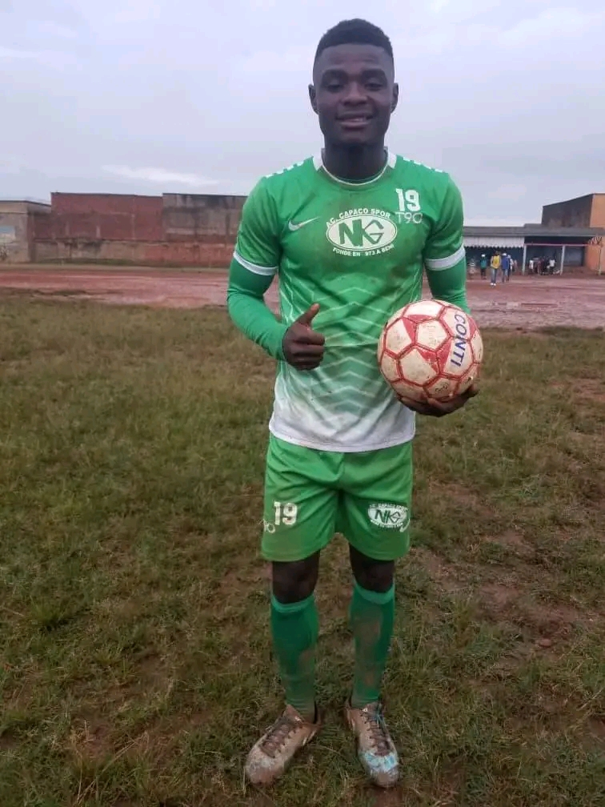
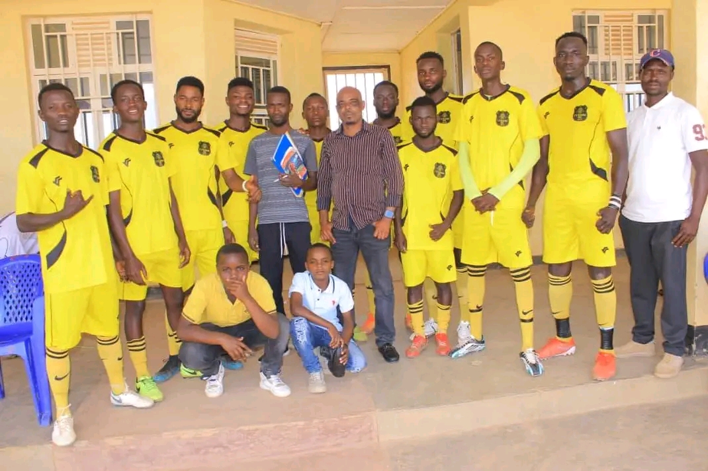

Career Highlights
🏆 The Journey of Victor Milamulo Lukumbu (2014–2025)
📍 2014 — The Beginning of Trust

It all began in 2014, in the heart of Beni, where a young boy
named Victor Milamulo Lukumbu took his first steps into organized
football. He joined Capaco Academy as a junior, not just with talent,
but with trust—trust in the process, in the coaches, and in himself.
Victor wasn’t the loudest on the pitch, but his discipline and hunger to learn
quickly caught the attention of his mentors. He trained relentlessly, absorbing
every drill, every tactic, and every lesson like a sponge. This was the foundation
year—the year that planted the seed of a future striker.
📍 2016 — The Leap to Senior Level

VJust two years later, Victor made his first official appearance with AC Capaco’s senior team. It was a proud moment, but also a humbling one. The leap from junior to senior was steep, and Victor spent most of the year on the bench—not as a punishment, but as a student of the game. Just two years later, Victor made his first official appearance with AC Capaco’s senior team. It was a proud moment, but also a humbling one. The leap from junior to senior was steep.
📍 2017 — First Local Contest Appearance

By 2017, Victor was ready. He had earned his place in the starting XI of AC Capaco during a local contest in Beni town. This was his first taste of competitive football beyond the academy walls. He played alongside seasoned players, holding his own and showing flashes of brilliance. The crowd began to recognize his name. Coaches began to trust his instincts. And Victor began to believe that he belonged—not just on the pitch, but in the spotlight.
📍 2018 — Breakthrough as a Striker

2018 was the year Victor exploded. Playing as a striker, he scored 12 goals in the local contest, finishing as the second top scorer. His style was direct, fearless, and clinical. Each goal told a story—of positioning, timing, and raw determination. His name echoed through Beni’s football circles, and fans began to chant it with pride. Victor wasn’t just participating anymore—he was leading.
📍 2019 — First Congo Cup Appearance 🇨🇩

The following year, Victor played in his first Congo Cup with AC Capaco. It was a national-level competition, and for Victor, it felt like stepping into a dream. The pressure was immense, but Victor thrived. He held his own against top-tier teams, showcasing not just skill but composure. This tournament marked his arrival on the national stage—a signal that Victor Milamulo Lukumbu was ready for bigger battles.
📍 2020 — Return to First Division

After the Congo Cup, Victor returned to the local First Division contests. It was a recalibration year—less about glory, more about consistency. He used this time to refine his technique, build stamina, and mentor younger teammates. Victor wasn’t just growing as a player—he was evolving into a leader.
📍 2021 — Provincial Competition with AC Capaco
In 2021, Victor represented AC Capaco in the provincial competition. The stakes were higher, the crowds louder, and the matches tougher. Victor’s performance was steady and mature. He played with tactical awareness, often dropping deep to support midfield and pressing high when needed. His versatility began to shine.
📍 2022 — Transfer to CS Vijana 4x4 (Bunia City)
Victor’s journey took a new turn in 2022 when he transferred to CS Vijana 4x4 in Bunia City. It was a bold move—new city, new team, new expectations. But Victor adapted quickly. His presence brought energy to the squad, and his experience from Capaco gave him an edge. He became a key figure in the team’s attacking strategy.
📍 2023 — Top Scorer in ERFTURI Competition

2023 was Victor’s golden year in Bunia. He scored 15 goals in the ERFTURI competition, finishing as the top scorer. His goals came in all forms—headers, volleys, solo runs. He was unstoppable. Fans in Bunia began calling him “The Finisher.” His reputation soared, and scouts started paying attention.
📍 2024 — Transfer to FC MONT BLEU (Bunia City)

Following his top scorer season, Victor transferred to FC MONT BLEU, one of Bunia’s most respected clubs. This move was strategic. Victor wanted to challenge himself further, play with elite teammates, and prepare for national-level competition. His ambition was clear: to rise to the top of Congolese football.
Victor stands tall on the green turf, freshly dressed in FC Mont Bleu’s training kit—a deep blue jersey with crisp white stripes running down the shoulders and sides, symbolizing a new beginning. His shorts bear the number 14, printed boldly on the left thigh—a number that may soon carry weight in Bunia’s football circles. His stance is confident: hands on hips, cleats planted firmly, gaze locked onto the camera. The cleats—white with green and orange accents—add a flash of energy to his grounded presence. Behind him, another player in similar gear warms up, hinting at the team atmosphere and the start of integration. The field is an artificial turf, clean and vibrant, bordered by a concrete wall and scattered trees—an outdoor facility that feels both raw and full of promise. This isn’t just a training ground. It’s the stage for Victor’s next evolution.
“Victor Milamulo Lukumbu during his first training session with FC Mont Bleu, moments after being scouted. A new chapter begins—focused, fearless, and ready to rise.”
📍 2025 — Joined CS ELDORADO (Second National League)

And in 2025, Victor did just that. He joined CS ELDORADO, competing in Congo’s Second National League. This is where Victor stands today—a seasoned striker, a respected leader, and a symbol of perseverance. From the dusty fields of Beni to the national league, Victor’s journey is a testament to trust, patience, and relentless growth.
Meet Victor
Victor is a passionate footballer with a relentless drive to improve and inspire. Born with a love for the game, he’s spent years honing his skills on local pitches, training grounds, and community tournaments.
⚽ Playing Style
Victor plays as a forward—fast, fearless, and focused. His agility and instinct in front of goal make him a constant threat to defenders.
🎯 Goals & Aspirations
Victor dreams of joining a professional team, representing his region, and inspiring young players to chase their dreams with discipline and heart.
💬 Favorite Quote
“Success isn’t given. It’s earned on the training ground.” – Victor